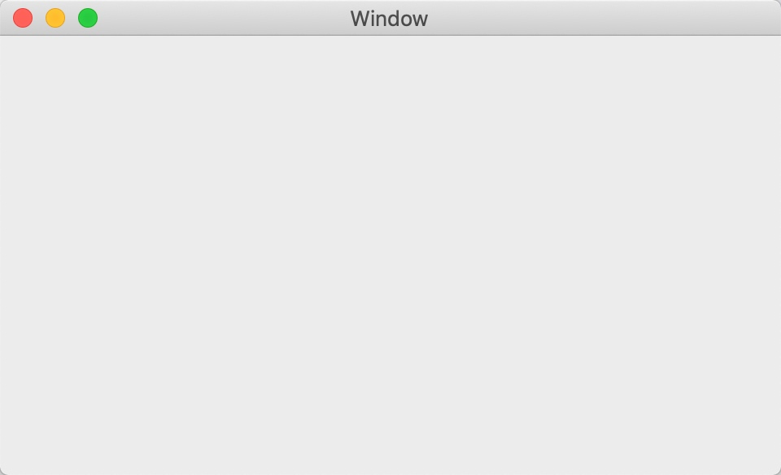
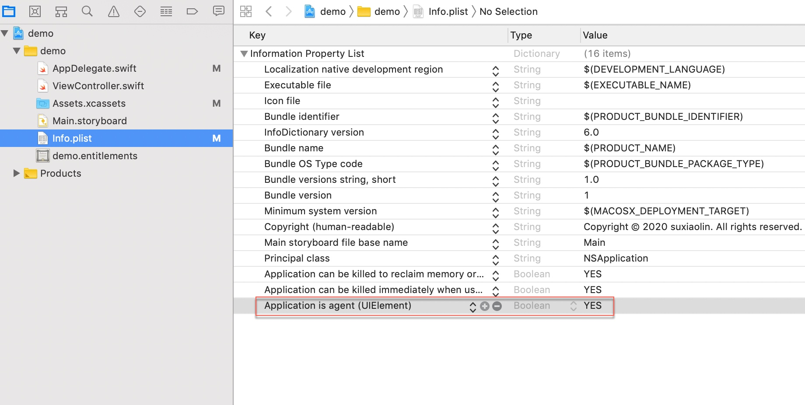
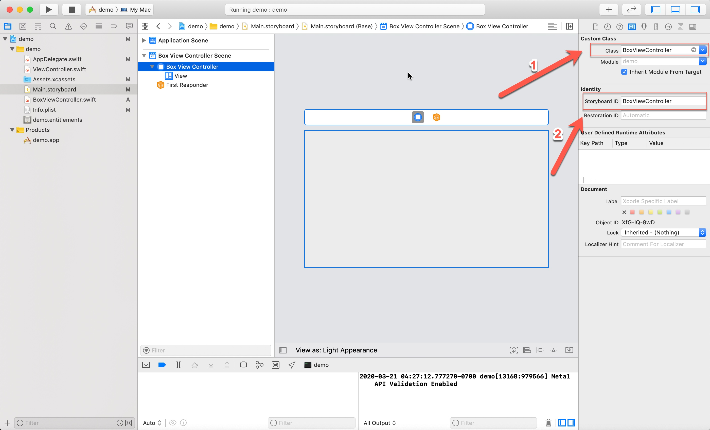

苹果作为世界市值最高的公司，即使它的商店对卖出的app提取30%的销售额，为其开发软件仍然是有价值的，研究学习mac和ios软件开发环境xcode就很有必要了
完整代码参考：https://1drv.ms/u/s!AquRvPzqx59Ri3sBDF9hUZc71YmZ?e=TI6OeP
创建项目
在File菜单中选择New -> Project创建项目

选择macOS应用分类下的App即可，操作效果如下
然后xcode要求输入应用基础设计，一切从简参考如下：
导入菜单栏图标
可以调整右边的Render As选项为Render As Template Image可以适配Mojave黑色模式的系统
隐藏窗口
xcode默认创建的mac os应用运行后默认带个应用窗口如下：

菜单栏应用在Info.plist隐藏窗口
- 设置Application is agent (UIElement)的类型为Boolean，值为True，操作效果如下：
- 在Main.storyboard删掉Window Controller Scene

然后在运行这个应用就只剩菜单了
点击菜单按钮出来一个盒子
创建代表盒子的控制器：BoxViewController，核心代码如下
class BoxViewController: NSViewController {
override func viewDidLoad() {
super.viewDidLoad()
// Do view setup here.
}
}
extension BoxViewController {
static func freshController() -> BoxViewController {
//获取对Main.storyboard的引用
let storyboard = NSStoryboard(name: NSStoryboard.Name("Main"), bundle: nil)
// 为PopoverViewController创建一个标识符
let identifier = NSStoryboard.SceneIdentifier("BoxViewController")
// 实例化PopoverViewController并返回
guard let viewcontroller = storyboard.instantiateController(withIdentifier: identifier) as? BoxViewController else {
fatalError("Something Wrong with Main.storyboard")
}
return viewcontroller
}
}
将默认的ViewController改为新增的BoxViewController

然后在AppDelegate.swift中的applicationDidFinishLaunching方法中注册单击菜单栏按钮后调起上面盒子，核心代码如下
class AppDelegate: NSObject, NSApplicationDelegate {
// ...
let boxPopover = NSPopover()
func applicationDidFinishLaunching(_ aNotification: Notification) {
// ...
// 注册点击菜单按钮后的盒子、使得点击生效
button.action = #selector(togglePopover(_:))
// 注册盒子控制器到当前盒子对象上
boxPopover.contentViewController = BoxViewController.freshController()
}
// ...
@objc func togglePopover(_ sender: Any?) {
if boxPopover.isShown {
closePopover(sender: sender)
} else {
showPopover(sender: sender)
}
}
func showPopover(sender: Any?) {
if let button = statusItem.button {
boxPopover.show(relativeTo: button.bounds, of: button, preferredEdge: NSRectEdge.minY)
}
}
func closePopover(sender: Any?) {
boxPopover.performClose(sender)
}
}
重新运行单击菜单栏按钮就可以出来上面新建的盒子了，效果如下
点击窗口任意地方、关闭盒子
现在这个新建的盒子只能再次点击菜单栏按钮消失、可以创建系统事件监视器，监控到任意鼠标操作，自动关闭菜单栏上面的盒子
创建Cocoa类型的事件监控器EventMonitor.swift，核心代码如下
public class EventMonitor {
private var monitor: Any?
private let mask: NSEvent.EventTypeMask
private let handler: (NSEvent?) -> Void
public init(mask: NSEvent.EventTypeMask, handler: @escaping (NSEvent?) -> Void) {
self.mask = mask
self.handler = handler
}
deinit {
stop()
}
public func start() { //开启监视器
monitor = NSEvent.addGlobalMonitorForEvents(matching: mask, handler: handler)
}
public func stop() { //关闭监视器
if monitor != nil {
NSEvent.removeMonitor(monitor!)
monitor = nil
}
}
}
然后在AppDelegate.swift注册这个监视器
// 申明应用全局监视器对象
var eventMonitor: EventMonitor?
// 创建监视器
eventMonitor = EventMonitor(mask: [.leftMouseDown, .rightMouseDown]) {
[weak self] event in
if let strongSelf = self, strongSelf.boxPopover.isShown {
strongSelf.closePopover(sender: event)
}
}
然后就可以在任意位置单击鼠标关闭盒子了
右键弹出功能菜单
在StoryBoard中添加一个表示点击右键后出现的下拉按钮组，操作流程如下：
然后打开Assistent，把这个下拉菜单拖到AppDelegate.swift中进行引用绑定，操作效果如下
然后给这个引用一个名字，比如这里使用dropbox，在AppDelegate.swift生成的引用代码参考如下
@IBOutlet weak var dropbox: NSMenu!
然后接管在菜单栏按钮上的鼠标右键操作
@objc func mouseClickHandler() {
if let event = NSApp.currentEvent {
switch event.type {
case .leftMouseUp:
togglePopover(boxPopover)
default:
statusItem.menu = dropbox
statusItem.button?.performClick(nil)
}
}
}
然后将之前的菜单栏按钮点击相应改为上面的方法：
即
// 注册点击菜单按钮后的盒子、使得点击生效
button.action = #selector(togglePopover(_:))
修改为
button.action = #selector(mouseClickHandler)
button.sendAction(on: [.leftMouseUp, .rightMouseUp])
然后就可以使用右键点击出现下拉按钮组了，效果如下
然后，会发现再次点击左键，第一个做的盒子出不来了，这是因为执行statusItem.menu = dropbox代码后，这个菜单栏就用dropbox代替了盒子，可以在每次下拉菜单关闭后把状态栏上的引用删掉
AppDelegate.swift末尾增加
extension AppDelegate: NSMenuDelegate {
// 为了保证按钮的单击事件设置有效，menu要去除
func menuDidClose(_ menu: NSMenu) {
self.statusItem.menu = nil
}
}
applicationDidFinishLaunching末尾增加
// 让右键下拉菜单组关闭后调用AppDelegate: NSMenuDelegate方法删除对下拉菜单组的引用，使得左键盒子能够正常工作
dropbox.delegate = self
即可实现左右点击都有效果了，最终效果参考如下：

一些注意的点
- StoryBoard绑定了ViewController可以更改StoryBoard绑定的Controller